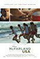
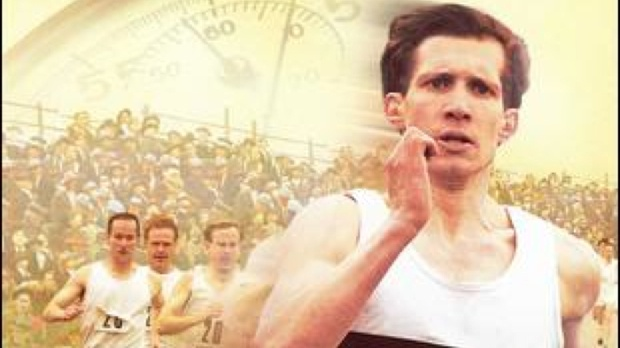

Movie Releases
-

Jim White had it all. As a presitgious, head football coach living in the sub-urban area of a town in Idaho. Fate turns abruptly on him as one inadvertent mistake sends him packing to the desistute, melancholic town of Cross-Valley, California. As he struggles to acclimate to his new environment, he ascertains the tribulations that everyone in this mostly latino town faces. Discovering the latent abilities of several embattled students, he quickly finds a new purpose, one that isn't fixated on affluence.
-
Ever since he was a young boy, Louis Zamperni displayed brazen recklesness and energy. With help from his family, he procures success as a reknown athlete; qualifying for the 1936 olympics, he was at an all-time high. When WW2 instigates, we follow his story diverge in a new direction as he joins as a pilot, gets shot down, and later captured as a Japanese POW. Watch this to see the impervious fighting spirit of a track athlete on full-display!
-

One of the most notorious barriers in the track and field world is the 4-minute mile barrier. Up to 1954, no one ever imagined that such a feat could be accomplished. Indulge in this true film as it takes you to the despondent, post-war era of the UK as Roger Bannister, an obstinate medical student, galvanizes and captures the imagination of the next generation of runner as he pursues history in breaking the 4-minute barrier.